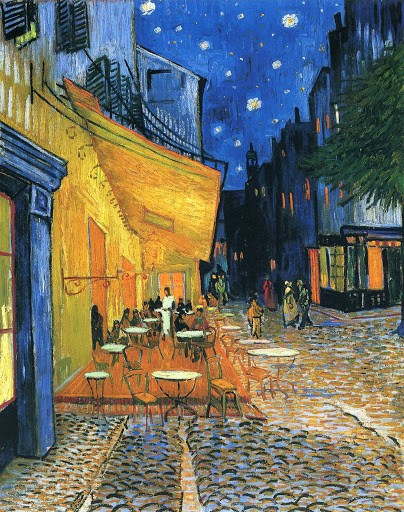
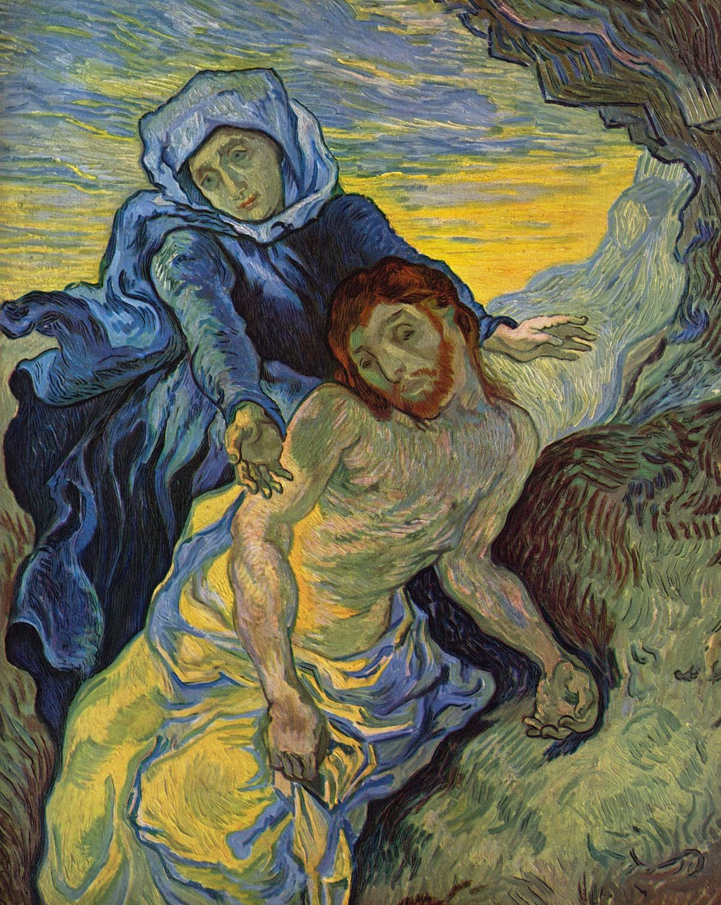

Винсент Ван Гог
Винсе́нт Ви́ллем Ван Гог (нидерл. Vincent Willem van Gogh; 30 марта 1853, Грот-Зюндерт[en], Нидерланды — 29 июля 1890, Овер-сюр-Уаз, Франция) — нидерландский художник-постимпрессионист, чьи работы оказали вневременное влияние на живопись XX века. За десять с небольшим лет он создал более 2100 произведений, включая около 860 картин маслом. Среди них — портреты, автопортреты, пейзажи и натюрморты, с изображением оливковых деревьев, кипарисов, полей пшеницы и подсолнухов. При жизни был практически обойдён вниманием критиков.

Звездная ночь
Ван Гогу было тесно в рамках реального мира. Он посчитал, что именно его фантазия, игра воображения необходимы для более полного изображения. Известно, что к моменту создания картины «Звездная ночь», автор проходил очередной курс лечения, ему разрешали работать только в случае улучшения состояния. Художник был лишен возможности творить на натуре. Многие работы в этот период (в том числе и «Звездную ночь») он создал по памяти.
Мощные, экспрессивные мазки, густые цвета, непростая композиция – все в этой картине рассчитано на восприятие с большого расстояния.
Удивительным образом автору удалось отделить небо от земли. Складывается впечатление, что активное движение в небе никак не влияет на то, что происходит на земле. Внизу – сонный городок, готовый уснуть мирным сном. Наверху – мощные потоки, огромные звезды и непрекращающееся движение.
Свет в работе исходит именно от звезд и луны, но его направленность непрямая. Блики, освещающие ночной город, выглядят случайными, отколовшимися от общего могучего вихря, царящего над миром.

Ночная терраса кафе
Винсент Ван Гог нарисовал данную картину в сентябре 1888 года во время своего пребывания в Арле. Зная приверженность художника к рисованию с натуры, совсем не удивительно, что для ночного пейзажа Ван Гог отправился в кафе в самый поздний час. Винсент считал, что только находясь там, он может уловить истинные цвета, которые видит в данный момент. Многоцветная картина на открытом воздухе - живописное произведение, видение расслабленного зрителя, который наслаждается очарованием своего окружения без всякой моральной заботы. Ярко освещенное кафе излучает тепло и манящий свет, становясь маяком желтого цвета на фоне насыщенного темно-синего ночного неба, которое в свою очередь освещается мириадами ярких звезд. Это напоминает настроение Ван Гога, когда он писал, что "ночь более живая и более богато окрашенная, чем день". Художник связывал желтый цвет с чувствами религиозного вдохновения, света и счастья.
В этой работе желтый цвет кафе противопоставлен иссиня-черному цвету отдаленной улицы и фиолетово-синему цвету двери на переднем плане. Настоящий фокус для глаз - это контраст освещенного фонарем кафе и неба. Ярко-желтый цвет, который Ван Гог определил для излучения фонаря, делает его таким же блестящим и дружелюбным, как солнечное сияние. Свет настолько яркий, что трудно разобрать форму фонаря, из которого он исходит, так же как и смотреть прямо на солнце. Его жизнерадостность притягивает людей на картине подобно тому, как подсолнухи поворачивают свои соцветия к солнцу. Тупой угол навеса касается далекого темно-синего неба. В контуре оранжевого пола кафе обнаруживается перевернутая проекция ночного неба с рассыпанными дисками звезд, которым соответствуют овальные столешницы внизу. От полотна исходит ощущение теплых летних ночей на юге Франции, где можно, не торопясь, потягивать напиток и расслабляться в течение нескольких часов. Желтый свет из кафе и сияние звезд заставляют ночь казаться живой, смешивая их вместе.

Пьета
Эта картина основана на литографии с картины Эжена Делакруа (1798—1803). На полотне «Пьета» изображена Дева Мария, которая скорбит по умершему Христу. Маленькая неприятность послужила поводом этой работы. Ван Гог писал своему брату Тео про это: «Литография с работы Делакруа „Пьета“ вместе с ещё несколькими листами упали в краску и масло и попортились. Меня это ужасно огорчило и теперь я занят тем, что пишу картину с неё, которую ты сможешь увидеть»[1]. Однако повреждённая масляным пятном литография также была сохранена. Работы на религиозные темы являются исключением в творчестве Ван Гога. Есть также версия, что больной и «непонятый» Ван Гог мог посредством этой картины сравнить себя со страдающим Христом. Он писал на эту тему в своих письмах: «Я человек не безразличный, и в самом процессе страдания мысли о религии и служении Богу приносят мне порой значительное утешение». Многие люди подчёркивают также внешнее сходство между рыжебородым художником Ван Гогом и похожей на него фигурой Христа на картине «Пьета»